Поучастковый анализ результатов по одномандатным округам №159–163.
Данные: протоколы УИК из ГАС «Выборы», выгрузка от 22.09.2026. Обработано 1703 участковые комиссии (22 сводки ТИК отфильтрованы); суммы сходятся с официальными итогами. Первоисточник: портал ЦИК, сырые JSON-протоколы сохранены в каталоге raw/. Все доли кандидатов считаются от действительных бюллетеней (строка 9 протокола); недействительные взяты из протокола, а не как разность. Ограничение данных: 22 файла выгрузки с номерами 101–128 (Алексеевская ТИК) оказались сводками ТИК с чужим списком кандидатов и исключены; файл УИК 3363 в выгрузке отсутствует — покрытие Алексеевской ТИК неполное (6 УИК).
⚠️ Статистические аномалии — признаки, дающие основания для сомнений и официальных запросов, но не юридические доказательства. Данные предварительные.
| Тест | Что ищет | Ожидание при честном голосовании |
|---|---|---|
| Явка 100% / ≥99,5% | «Закрытие списка» | Единичные случаи на карликовых УИК |
| «Вылизанная» явка (70/75/80/85/90/95 ±0,05) | Маскированная подгонка | Значимость проверена (Бонферрони): реальна в №161/162 |
| «Полки» результата (80/85/90/95 ±0,05) | Квоты на участок | — |
| 100% за кандидата / недействительных 0 | Замена результатов | Почти невозможно на УИК >50 изб. |
| «Ровно 1 голос» оппозиции при явке >100 чел. | Символические дозаписи | Только на карликовых УИК |
| Дубли абсолютных чисел между УИК | Копипаст «порций» голосов | Единичные |
| Выброс внутри ТИК (≥90% при медиане ТИК <60%) | Локальный вброс | — |
| Корреляция «% × явка» (внутри групп город/село) | Зависимость результата от явки | r ≈ 0 |
| Недействительные = 0 при явке ≥85% (T7) | Замена/переписывание итогов | Практически невозможно |
Аномальным считается УИК, где сработал хотя бы один тест; зоной концентрации — ТИК со множеством срабатываний. Полный реестр: suspicious_uiks.csv.
| Округ | Лидер (партия) | Официально | r(%×явка) | Без аномальных УИК* | Аномальных УИК |
|---|---|---|---|---|---|
| №162 Жигулевский | Трифонов (ЕР) | 68,1% | +0,88 | 49,7% (−241 УИК) | 158 из 402 (39,3%) |
| №161 Красноглинский | Портнягин (ЕР) | 70,6% | +0,77 | 51,2% (−260 УИК) | 197 из 448 (44,0%) |
| №163 Промышленный | Живайкин (ЕР) | 41,9% | +0,79 | 35,6% (−39 УИК) | 81 из 325 (24,9%) |
| №159 Самарский | Фетисов (ЕР) | 57,5% | +0,77 | 45,5% (−90 УИК) | 69 из 323 (21,4%) |
| №160 Тольяттинский | Калашников (КПРФ) | 40,6% | +0,86 | 27,9% (−23 УИК) | 49 из 205 (23,9%) |
* Контрфактический тест: исключены УИК с явкой >60% и результатом лидера >70% (в городских ТИК таких почти нет). Это оценка масштаба «сельской надбавки», а не точный прогноз.
Лидер: Трифонов Андрей Федорович (ЕР), официально 68,1%. Явка по округу: 67,8%. Аномальных УИК: 158 из 402.
Корреляция «% за Трифонов (ЕР) × явка»: сводная r = +0,88; внутри групп: город r = +0,80, село r = +0,76. Сводный r частично является артефактом бимодальности (два кластера город/село сами дают высокий r). Контрфактически без аномальных «верхних» УИК: 68,1% → 49,7% (доли — от действительных бюллетеней).
Явка 100% / ≥99,5% — 7 УИК:
| УИК | ТИК | Избирателей | Явка, % | % за лидера |
|---|---|---|---|---|
| 3781 | Сызранская городская | 396 | 100,00 | 97,7 |
| 2204 | Пестравская | 259 | 100,00 | 91,5 |
| 3760 | Сызранская городская | 246 | 100,00 | 88,7 |
| 3625 | Сызранская | 245 | 99,59 | 77,0 |
| 1605 | Красноармейская | 153 | 100,00 | 83,7 |
| 3761 | Сызранская городская | 32 | 100,00 | 100,0 |
| 3784 | Сызранская городская | 1 | 100,00 | 100,0 |
«Ровно 1 голос» у оппозиции при явке ≥100 человек — 21 УИК: УИК 220 (Безенчукская, явившихся 146); УИК 229 (Безенчукская, явившихся 143); УИК 1612 (Красноармейская, явившихся 130); УИК 2206 (Пестравская, явившихся 298); УИК 2401 (Приволжская, явившихся 106); УИК 2405 (Приволжская, явившихся 136); УИК 2406 (Приволжская, явившихся 112); УИК 2407 (Приволжская, явившихся 115); УИК 2409 (Приволжская, явившихся 329); УИК 2412 (Приволжская, явившихся 398); УИК 2422 (Приволжская, явившихся 457); УИК 2425 (Приволжская, явившихся 116); УИК 2427 (Приволжская, явившихся 451); УИК 3605 (Сызранская, явившихся 210); УИК 3760 (Сызранская городская, явившихся 246)….
Дубли числа голосов у Трифонов (ЕР): 215 голосов на УИК [3907, 3909, 3927]; 232 голосов на УИК [3621, 3932, 4518]; 256 голосов на УИК [3501, 3608, 3912, 3919]; 270 голосов на УИК [2206, 3908, 4109]; 281 голосов на УИК [227, 2004, 3940]; 362 голосов на УИК [225, 3903, 3916]; 387 голосов на УИК [2011, 3753, 3781]; 412 голосов на УИК [922, 2014, 4522]; 419 голосов на УИК [1630, 3627, 4213]; 434 голосов на УИК [1619, 3725, 3744]; 618 голосов на УИК [3626, 3748, 4202, 4229]; 647 голосов на УИК [913, 4217, 4231].
100% голосов у лидера (недействительных 0): 2426, 3761, 3784.
Концентрация аномалий по ТИК: Приволжская (29), Пестравская (23), Хворостянская (22), Шигонская (14), Красноармейская (13), Безенчукская (12).
Интерпретация: Максимальная внутри-групповая корреляция %×явка (город +0,80, село +0,77 — связь реальна, не артефакт кластеров) и 76 УИК с явкой ≥95% и результатом ≥90%. Протоколы 3761 (32 избирателя) и 3784 (1 избиратель) дают тривиальные 100% — на карликовых УИК это не самостоятельный признак; значимы их нулевые недействительные на фоне городских 5–8%. Контрфактически 68,0% → 50,7%.
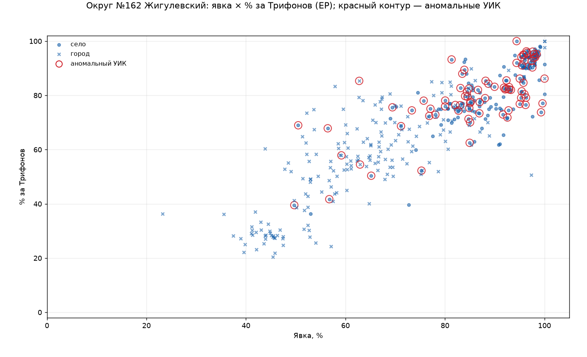
Явка × % за Трифонов (ЕР). Красным контуром выделены УИК из реестра подозрительных — виден «хвост» аномальных участков в правом верхнем углу (высокая явка + высокий результат), городской сектор (крестики) контуром практически не затронут.
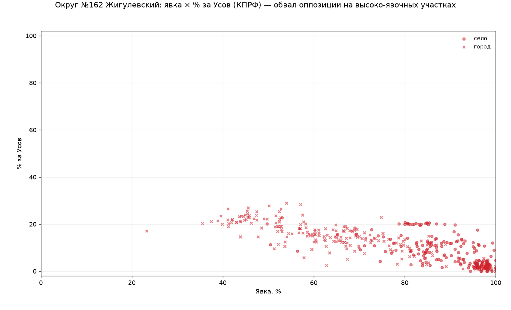
Явка × % за основного оппозиционера Усов (КПРФ): его доля не растёт с явкой, а на высоко-явочных сельских участках падает почти до нуля — зеркальное отражение «надбавки» лидера.
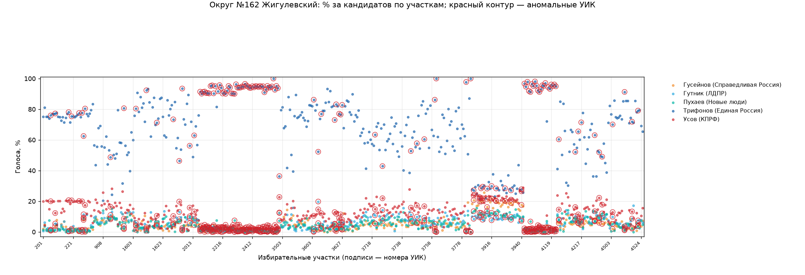
Проценты всех кандидатов по участкам; красный контур — аномальные УИК. У лидера контуры собираются в «полки», у остальных кандидатов на тех же участках — провал к нулю.
Лидер: Портнягин Денис Олегович (ЕР), официально 70,6%. Явка по округу: 61,3%. Аномальных УИК: 197 из 448.
Корреляция «% за Портнягин (ЕР) × явка»: сводная r = +0,77; внутри групп: город r = +0,36, село r = +0,57. Сводный r частично является артефактом бимодальности (два кластера город/село сами дают высокий r). Контрфактически без аномальных «верхних» УИК: 70,6% → 51,2% (доли — от действительных бюллетеней).
Явка 100% / ≥99,5% — 11 УИК:
| УИК | ТИК | Избирателей | Явка, % | % за лидера |
|---|---|---|---|---|
| 1526 | Кошкинская | 447 | 99,55 | 96,6 |
| 1523 | Кошкинская | 295 | 100,00 | 85,1 |
| 808 | Елховская | 250 | 100,00 | 90,4 |
| 2714 | Самара, Красноглинская | 243 | 100,00 | 72,2 |
| 807 | Елховская | 235 | 100,00 | 93,2 |
| 1522 | Кошкинская | 230 | 99,57 | 88,2 |
| 1528 | Кошкинская | 188 | 100,00 | 50,6 |
| 1529 | Кошкинская | 140 | 100,00 | 53,0 |
| 2692 | Самара, Кировская | 137 | 100,00 | 35,6 |
| 1114 | Камышлинская | 98 | 100,00 | 71,1 |
| 2690 | Самара, Кировская | 55 | 100,00 | 22,0 |
«Ровно 1 голос» у оппозиции при явке ≥100 человек — 37 УИК: УИК 801 (Елховская, явившихся 197); УИК 803 (Елховская, явившихся 468); УИК 807 (Елховская, явившихся 235); УИК 818 (Елховская, явившихся 151); УИК 1013 (Исаклинская, явившихся 130); УИК 1102 (Камышлинская, явившихся 161); УИК 1410 (Клявлинская, явившихся 172); УИК 1418 (Клявлинская, явившихся 203); УИК 1419 (Клявлинская, явившихся 131); УИК 1422 (Клявлинская, явившихся 117); УИК 1423 (Клявлинская, явившихся 112); УИК 1511 (Кошкинская, явившихся 320); УИК 1514 (Кошкинская, явившихся 142); УИК 1515 (Кошкинская, явившихся 191); УИК 1519 (Кошкинская, явившихся 202)….
Дубли числа голосов у Портнягин (ЕР): 112 голосов на УИК [1521, 1532, 2606, 2654]; 125 голосов на УИК [1409, 1514, 2659]; 131 голосов на УИК [1008, 4401, 4417]; 146 голосов на УИК [1534, 1745, 2619, 4702]; 154 голосов на УИК [1417, 2641, 2673]; 160 голосов на УИК [1508, 3430, 4303, 4312]; 168 голосов на УИК [2611, 2612, 2725, 4402, 4412]; 177 голосов на УИК [1515, 1517, 3428]; 192 голосов на УИК [2674, 3431, 4419]; 198 голосов на УИК [2721, 4308, 4415]; 202 голосов на УИК [819, 1522, 2688, 2713]; 242 голосов на УИК [2704, 2728, 4325]; 271 голосов на УИК [1535, 3432, 4717]; 289 голосов на УИК [806, 1104, 1741]; 304 голосов на УИК [1524, 2312, 3433]; 346 голосов на УИК [2630, 2657, 4421, 4723]; 443 голосов на УИК [2628, 2629, 2748].
100% голосов у лидера (недействительных 0): 4702.
Концентрация аномалий по ТИК: Кошкинская (29), Челно-Вершинская (27), Шенталинская (23), Похвистневская (21), Елховская (17), Клявлинская (16).
Интерпретация: Самая выраженная «квотовая» структура: 33 УИК с результатом лидера ровно в бине 90%, 9 УИК со стопроцентной явкой (включая два городских — 2690, 2692 в Самаре), массовые «1 голос» оппозиции. Контрфактически Портнягин (ЕР) 68,9% → 51,4% — мандат сохраняется, но с минимальным запасом.
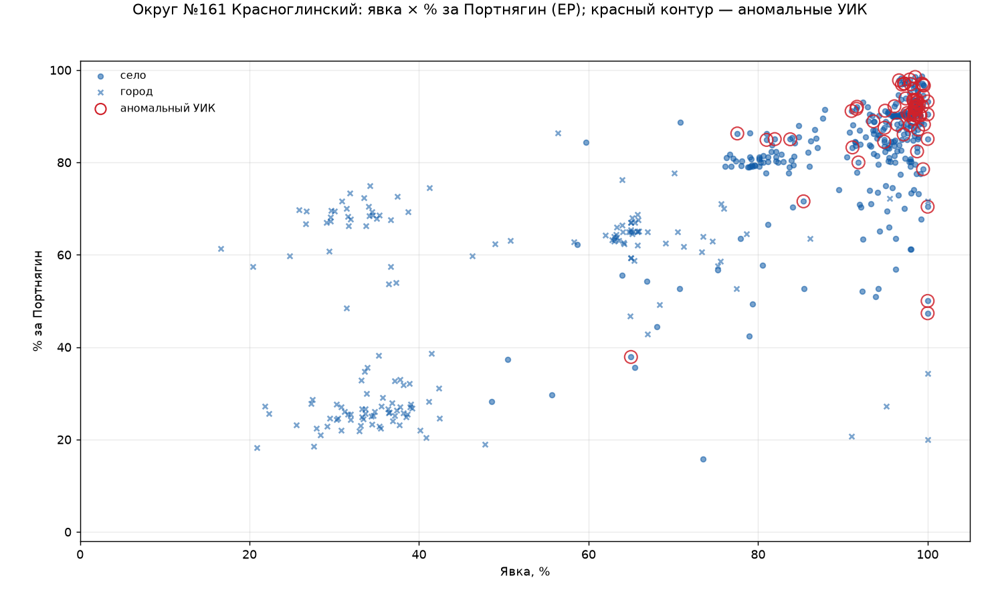
Явка × % за Портнягин (ЕР). Красным контуром выделены УИК из реестра подозрительных — виден «хвост» аномальных участков в правом верхнем углу (высокая явка + высокий результат), городской сектор (крестики) контуром практически не затронут.
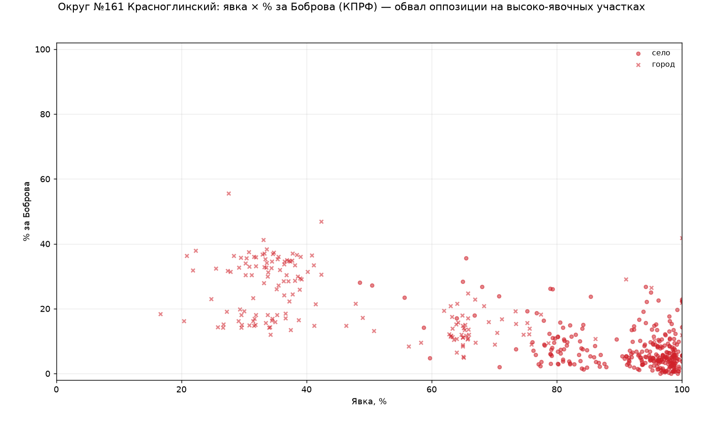
Явка × % за основного оппозиционера Боброва (КПРФ): его доля не растёт с явкой, а на высоко-явочных сельских участках падает почти до нуля — зеркальное отражение «надбавки» лидера.
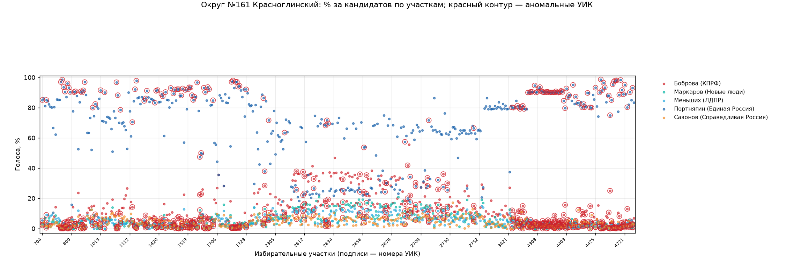
Проценты всех кандидатов по участкам; красный контур — аномальные УИК. У лидера контуры собираются в «полки», у остальных кандидатов на тех же участках — провал к нулю.
Лидер: Живайкин Александр Иванович (ЕР), официально 41,9%. Явка по округу: 45,3%. Аномальных УИК: 81 из 325.
Корреляция «% за Живайкин (ЕР) × явка»: сводная r = +0,79; внутри групп: город r = +0,53, село r = +0,65. Сводный r частично является артефактом бимодальности (два кластера город/село сами дают высокий r). Контрфактически без аномальных «верхних» УИК: 41,9% → 35,6% (доли — от действительных бюллетеней).
Явка 100% / ≥99,5% — 5 УИК:
| УИК | ТИК | Избирателей | Явка, % | % за лидера |
|---|---|---|---|---|
| 619 | Борская | 1335 | 99,78 | 67,3 |
| 605 | Борская | 1294 | 100,00 | 61,4 |
| 627 | Борская | 574 | 99,65 | 78,7 |
| 3365 | Самара, Советская | 31 | 100,00 | 93,5 |
| 3364 | Самара, Советская | 14 | 100,00 | 92,9 |
«Ровно 1 голос» у оппозиции при явке ≥100 человек — 7 УИК: УИК 601 (Борская, явившихся 247); УИК 608 (Борская, явившихся 586); УИК 611 (Борская, явившихся 279); УИК 617 (Борская, явившихся 801); УИК 630 (Борская, явившихся 359); УИК 632 (Борская, явившихся 268); УИК 4623 (Кинельская, явившихся 318).
Выбросы внутри ТИК (лидер ≥90% при медиане ТИК <60%): УИК 3365 (Самара, Советская: медиана 32,2%, результат 93,5%); УИК 3364 (Самара, Советская: медиана 32,2%, результат 92,9%).
Дубли числа голосов у Живайкин (ЕР): 116 голосов на УИК [1207, 3330, 5026]; 139 голосов на УИК [1310, 1330, 3357]; 153 голосов на УИК [723, 5024, 5045]; 158 голосов на УИК [1216, 5047, 5054]; 166 голосов на УИК [3351, 5003, 5048]; 171 голосов на УИК [601, 3332, 5035]; 172 голосов на УИК [1215, 5011, 5097]; 175 голосов на УИК [1204, 4612, 5046, 5094]; 177 голосов на УИК [1319, 3356, 5013]; 178 голосов на УИК [1206, 3304, 5061]; 180 голосов на УИК [4605, 5034, 5052]; 181 голосов на УИК [3360, 5027, 5063]; 183 голосов на УИК [5044, 5053, 5065]; 184 голосов на УИК [4609, 5058, 5089]; 194 голосов на УИК [3348, 3355, 5069, 5091]; 197 голосов на УИК [3361, 4603, 5055]; 217 голосов на УИК [3359, 5014, 5081]; 250 голосов на УИК [1217, 1225, 5080]; 253 голосов на УИК [611, 1205, 1332]; 292 голосов на УИК [1224, 3320, 3325, 5073]; 319 голосов на УИК [310, 1201, 3321].
Концентрация аномалий по ТИК: Самара, Промышленная (30), Самара, Советская (14), Борская (12), Кинельская городская (10), Кинельская (7), Кинель-Черкасская (4).
Интерпретация: Наиболее конкурентный и наименее аномальный округ (лидер официально 41,8% от действительных). Основные следы — УИК 3364/3365 (Самара, Советская; 14 и 31 избиратель, 100% явка, ~93% за Живайкина) и УИК 605 (Борская, 1294 избирателя, точная явка 100%). Контрфактический пересчёт для всех кандидатов: разрыв Живайкин (ЕР)–Матвеев (КПРФ) сокращается с 18,3 тыс. до 6,8 тыс. голосов (~2,7 раза) — масштаб аномалий сопоставим с разрывом, но победа сохраняется.
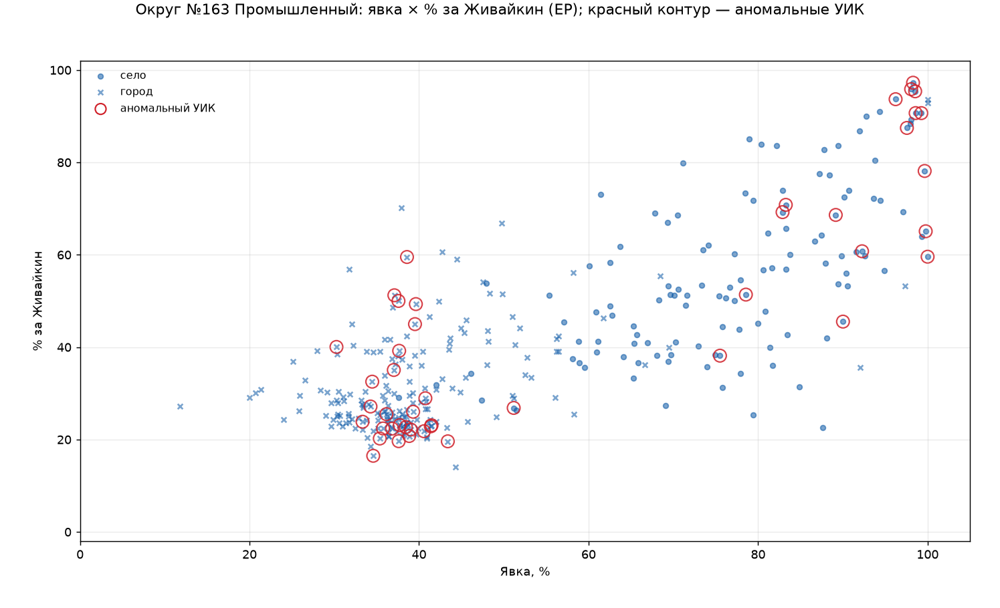
Явка × % за Живайкин (ЕР). Красным контуром выделены УИК из реестра подозрительных — виден «хвост» аномальных участков в правом верхнем углу (высокая явка + высокий результат), городской сектор (крестики) контуром практически не затронут.
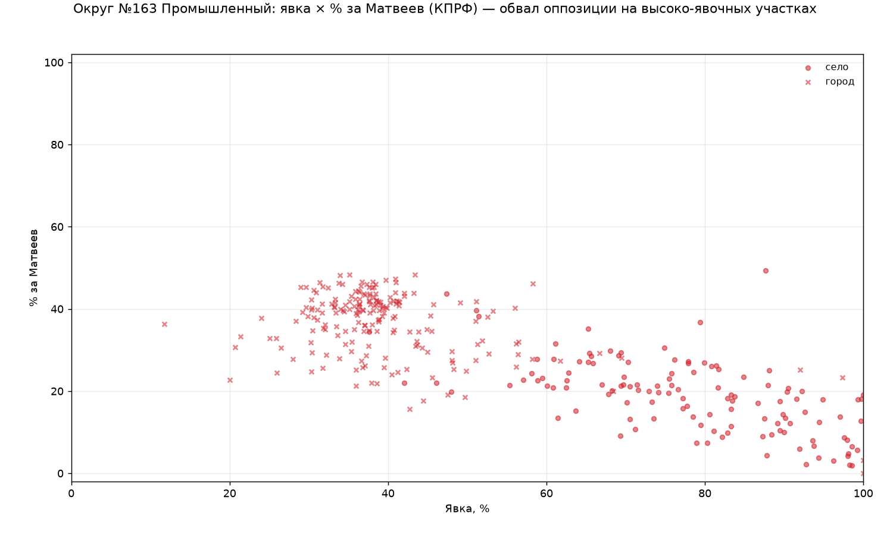
Явка × % за основного оппозиционера Матвеев (КПРФ): его доля не растёт с явкой, а на высоко-явочных сельских участках падает почти до нуля — зеркальное отражение «надбавки» лидера.
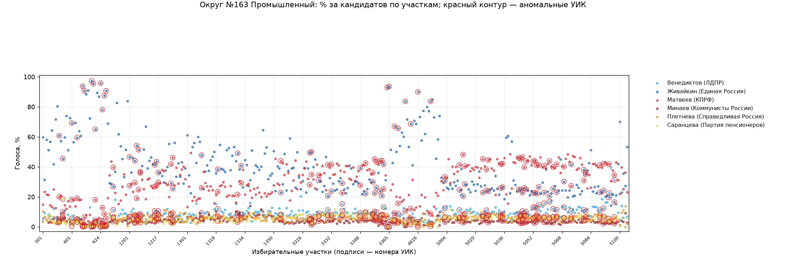
Проценты всех кандидатов по участкам; красный контур — аномальные УИК. У лидера контуры собираются в «полки», у остальных кандидатов на тех же участках — провал к нулю.
Лидер: Фетисов Александр Борисович (ЕР), официально 57,5%. Явка по округу: 53,8%. Аномальных УИК: 69 из 323.
Корреляция «% за Фетисов (ЕР) × явка»: сводная r = +0,77; внутри групп: город r = +0,52, село r = +0,62. Сводный r частично является артефактом бимодальности (два кластера город/село сами дают высокий r). Контрфактически без аномальных «верхних» УИК: 57,5% → 45,5% (доли — от действительных бюллетеней).
Явка 100% / ≥99,5% — 3 УИК:
| УИК | ТИК | Избирателей | Явка, % | % за лидера |
|---|---|---|---|---|
| 1821 | Нефтегорская | 759 | 100,00 | 68,9 |
| 2837 | Самара, Куйбышевская | 357 | 100,00 | 51,4 |
| 3054 | Самара, Октябрьская | 129 | 100,00 | 68,8 |
«Ровно 1 голос» у оппозиции при явке ≥100 человек — 9 УИК: УИК 410 (Большеглушицкая, явившихся 115); УИК 505 (Большечерниговская, явившихся 500); УИК 510 (Большечерниговская, явившихся 608); УИК 515 (Большечерниговская, явившихся 219); УИК 518 (Большечерниговская, явившихся 245); УИК 522 (Большечерниговская, явившихся 306); УИК 711 (Волжская-159, явившихся 601); УИК 744 (Волжская-159, явившихся 306); УИК 1805 (Нефтегорская, явившихся 107).
Дубли числа голосов у Фетисов (ЕР): 168 голосов на УИК [126, 516, 2518]; 209 голосов на УИК [1944, 3003, 3206]; 218 голосов на УИК [2502, 2906, 3204]; 222 голосов на УИК [518, 1906, 1931]; 272 голосов на УИК [503, 1952, 2904]; 286 голосов на УИК [403, 414, 416]; 290 голосов на УИК [1930, 3040, 3205]; 296 голосов на УИК [2523, 2908, 3020]; 352 голосов на УИК [746, 1927, 2525]; 456 голосов на УИК [422, 502, 1808, 2529].
Концентрация аномалий по ТИК: Большечерниговская (19), Большеглушицкая (10), Волжская-159 (8), Новокуйбышевская городская (6), Самара, Октябрьская (6), Нефтегорская (5).
Интерпретация: Аномалии сосредоточены в сельских ТИК (Большечерниговская, Нефтегорская, Волжская-159) и нескольких малых городских УИК. Контрфактический пересчёт для всех кандидатов (аудит): Фетисов (ЕР) 57,4% → 46,1%, но Лескин (КПРФ) 15,9% → 19,6% — разрыв 1–2 места сокращается со 104,9 тыс. до 53,1 тыс. голосов, победа Фетисова сохраняется с большим запасом. Корректная формулировка: масштаб «дорисовки» велик, но исход мандата при честном подсчёте не меняется.
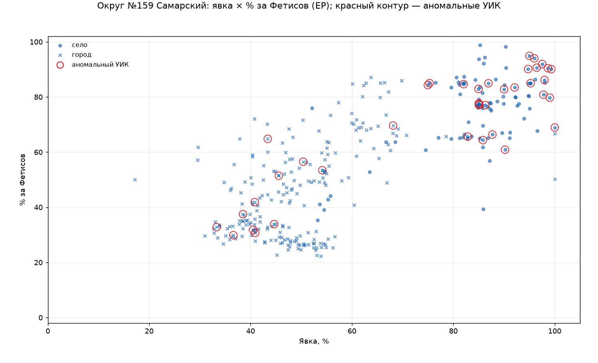
Явка × % за Фетисов (ЕР). Красным контуром выделены УИК из реестра подозрительных — виден «хвост» аномальных участков в правом верхнем углу (высокая явка + высокий результат), городской сектор (крестики) контуром практически не затронут.
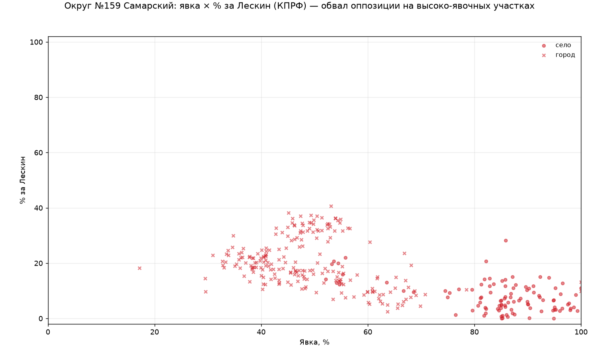
Явка × % за основного оппозиционера Лескин (КПРФ): его доля не растёт с явкой, а на высоко-явочных сельских участках падает почти до нуля — зеркальное отражение «надбавки» лидера.
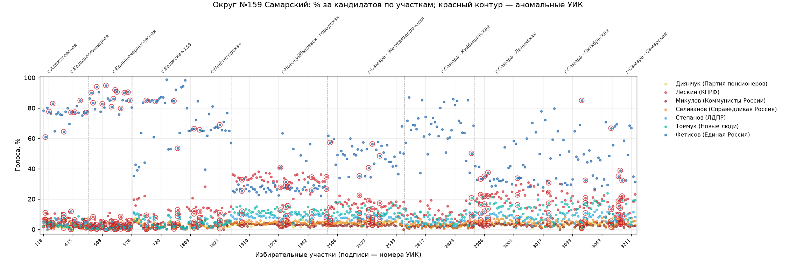
Проценты всех кандидатов по участкам; красный контур — аномальные УИК. У лидера контуры собираются в «полки», у остальных кандидатов на тех же участках — провал к нулю.
Лидер: Калашников Леонид Иванович (КПРФ), официально 40,6%. Явка по округу: 43,7%. Аномальных УИК: 49 из 205.
Корреляция «% за Калашников (КПРФ) × явка»: сводная r = +0,86; внутри групп: город r = +-0,00, село r = +0,06. Сводный r частично является артефактом бимодальности (два кластера город/село сами дают высокий r). Контрфактически без аномальных «верхних» УИК: 40,6% → 27,9% (доли — от действительных бюллетеней).
«Ровно 1 голос» у оппозиции при явке ≥100 человек — 14 УИК: УИК 3507 (Ставропольская-160, явившихся 1120); УИК 3508 (Ставропольская-160, явившихся 318); УИК 3514 (Ставропольская-160, явившихся 895); УИК 3517 (Ставропольская-160, явившихся 494); УИК 3518 (Ставропольская-160, явившихся 333); УИК 3519 (Ставропольская-160, явившихся 1104); УИК 3523 (Ставропольская-160, явившихся 1950); УИК 3525 (Ставропольская-160, явившихся 1887); УИК 3527 (Ставропольская-160, явившихся 1303); УИК 3528 (Ставропольская-160, явившихся 1259); УИК 3529 (Ставропольская-160, явившихся 1184); УИК 3536 (Ставропольская-160, явившихся 282); УИК 3543 (Ставропольская-160, явившихся 2170); УИК 3545 (Ставропольская-160, явившихся 2109).
Дубли числа голосов у Калашников (КПРФ): 196 голосов на УИК [4025, 4044, 6029, 6145]; 212 голосов на УИК [4024, 4030, 6024, 6030, 6032, 6110]; 222 голосов на УИК [4042, 6007, 6065]; 232 голосов на УИК [4055, 6005, 6036, 6061]; 263 голосов на УИК [4029, 6092, 6106]; 271 голосов на УИК [4040, 6027, 6136]; 293 голосов на УИК [6063, 6086, 6095, 6130]; 295 голосов на УИК [4018, 4053, 6013]; 326 голосов на УИК [3518, 4012, 6096]; 348 голосов на УИК [6021, 6039, 6082].
Концентрация аномалий по ТИК: Тольятти, Автозаводская (24), Ставропольская-160 (14), Тольятти, Центральная (11).
Интерпретация: Уникальный случай: аномальная машина работала на победителя от КПРФ. Серия УИК 3507–3546 (Ставропольская-160, сельский Ставропольский район) дала Калашникову 94–99% при явке 72–87%, при этом соседний УИК 3515 при той же явке — 13,3%. Город Тольятти голосовал конкурентно (медиана явки 40%). Мандат Калашникова держится на ~24 «сельских» участках. Официальные протоколы ГАС «Выборы» фиксируют картину буквально: УИК 3518 — у семи кандидатов по 1 голосу (Калашников (КПРФ) 326); УИК 3546 — Калашников (КПРФ) 1184, у пятерых по 0, у Маряхина 3, у Сакеева 9 (см. скриншоты ниже).
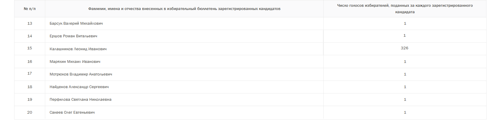
Официальный протокол ГАС «Выборы», УИК №3518 (Ставропольская-160): у семи из восьми кандидатов ровно по 1 голосу, у Калашникова (КПРФ) — 326. Скриншот с сайта избиркома.
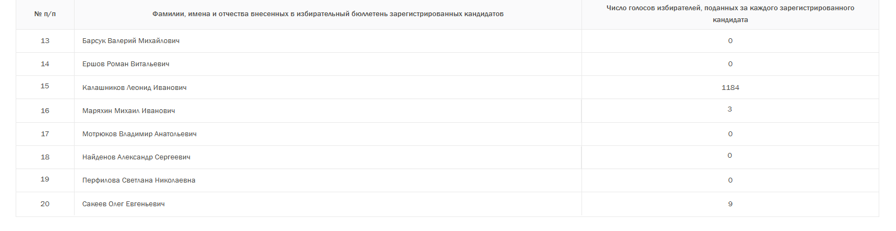
Официальный протокол УИК №3546 (Ставропольская-160): Калашников (КПРФ) — 1184 голоса, у пятерых кандидатов по 0, у Маряхина — 3, у Сакеева — 9. Скриншот с сайта избиркома.
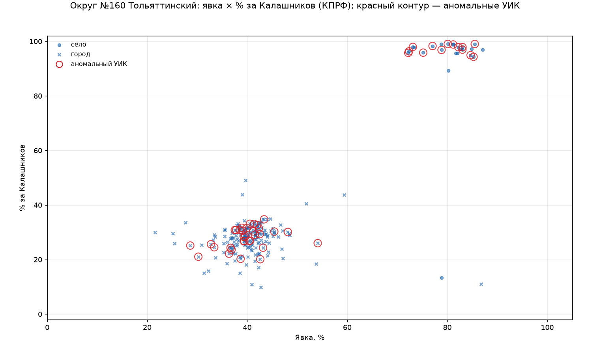
Явка × % за Калашников (КПРФ). Красным контуром выделены УИК из реестра подозрительных — виден «хвост» аномальных участков в правом верхнем углу (высокая явка + высокий результат), городской сектор (крестики) контуром практически не затронут.
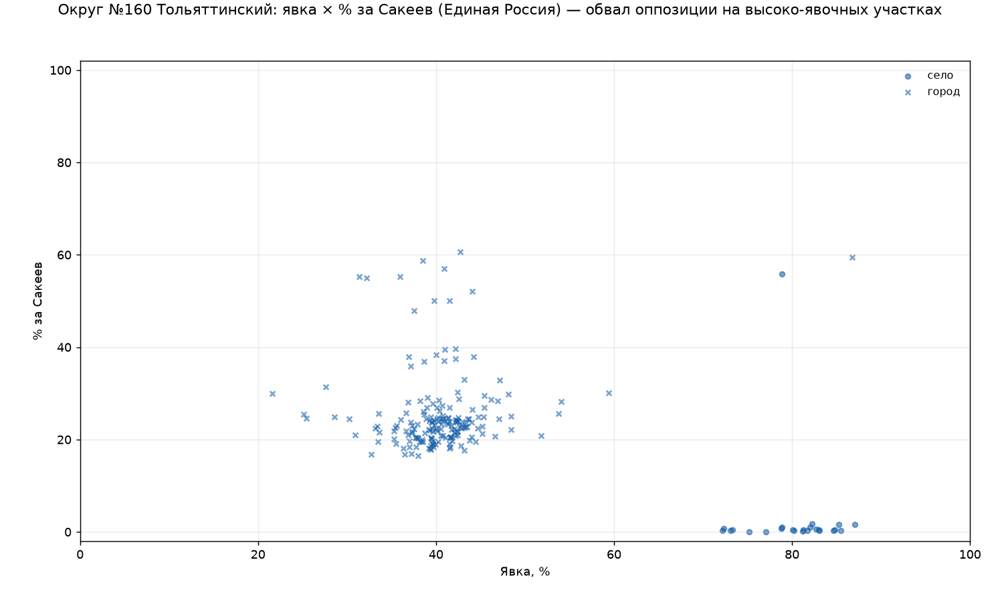
Явка × % за основного оппозиционера Сакеев (ЕР): его доля не растёт с явкой, а на высоко-явочных сельских участках падает почти до нуля — зеркальное отражение «надбавки» лидера.
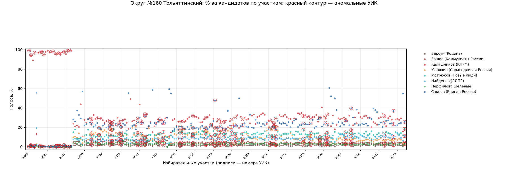
Проценты всех кандидатов по участкам; красный контур — аномальные УИК. У лидера контуры собираются в «полки», у остальных кандидатов на тех же участках — провал к нулю.
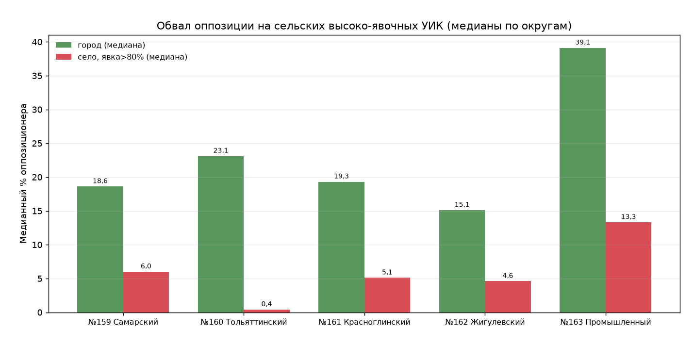
Медианная доля основного оппозиционера: городские УИК против сельских с явкой >80%. Во всех пяти округах оппозиция на «аномальных» сельских участках теряет 3–58 крат.
1. Обвал оппозиции на высоко-явочных сельских УИК. Медианная доля основного оппозиционера округа на городских УИК против сельских УИК с явкой >80%:
| Округ | Оппозиционер | Город (медиана) | Село при явке >80% (медиана) | Обвал |
|---|---|---|---|---|
| №162 Жигулевский | Усов (КПРФ) | 15,1% | 4,6% | ×3 |
| №161 Красноглинский | Боброва (КПРФ) | 19,3% | 5,1% | ×4 |
| №163 Промышленный | Матвеев (КПРФ) | 39,1% | 13,3% | ×3 |
| №159 Самарский | Лескин (КПРФ) | 18,6% | 6,0% | ×3 |
| №160 Тольяттинский | Сакеев (ЕР) | 23,1% | 0,4% | ×58 |
| Округ | Оппозиционер | Ожидалось голосов | Фактически | Сохранено |
|---|---|---|---|---|
| №162 Жигулевский | Усов (КПРФ) | ~17488 | 9828 | 56% |
| №162 Жигулевский | Гутник (ЛДПР) | ~9086 | 3459 | 38% |
| №161 Красноглинский | Боброва (КПРФ) | ~33439 | 10663 | 32% |
| №161 Красноглинский | Маркаров (НЛ) | ~15945 | 5020 | 31% |
| №163 Промышленный | Матвеев (КПРФ) | ~21660 | 10141 | 47% |
| №163 Промышленный | Венедиктов (ЛДПР) | ~6156 | 3717 | 60% |
| №159 Самарский | Лескин (КПРФ) | ~12562 | 4177 | 33% |
| №159 Самарский | Томчук (НЛ) | ~7522 | 2087 | 28% |
| №160 Тольяттинский | Сакеев (ЕР) | ~8069 | 413 | 5% |
| №160 Тольяттинский | Мотрюков (НЛ) | ~4092 | 68 | 2% |
В сельской зоне кандидатам «недописали» от 44% (Усов (КПРФ)) до 98% (Мотрюков (Новые люди)) ожидаемых голосов — зеркальное отражение «сельской надбавки» лидеров.
Всего 130 УИК, где как минимум два кандидата получили не более 2 голосов при явке ≥100 человек: 162 Жигулевский — 34, 161 Красноглинский — 52, 163 Промышленный — 7, 159 Самарский — 16, 160 Тольяттинский — 21. Полная таблица — в Приложениях.
Рекомендации: запросить копии протоколов УИК из реестра (suspicious_uiks.csv) с подписями членов комиссий; сопоставить с видеонаблюдением и КОИБ; направить обращения в ИКСО №63 и прокуратуру с фокусом на ТИК-лидеров концентрации аномалий.
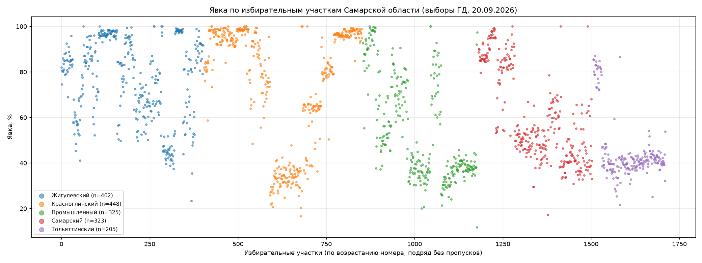
Явка по всем участкам области (цвет — округ)
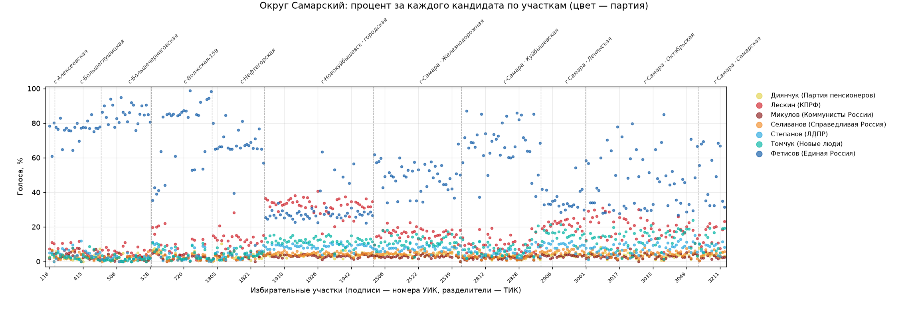
Округ №159 Самарский: % кандидатов по участкам
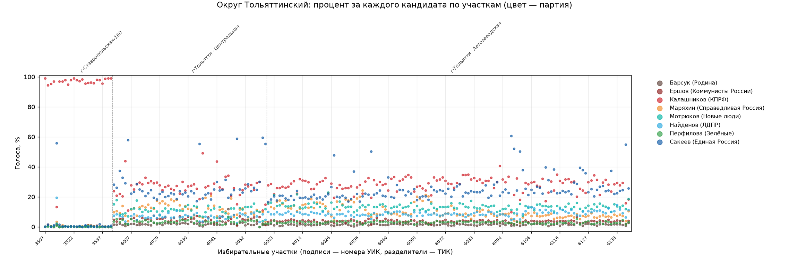
Округ №160 Тольяттинский
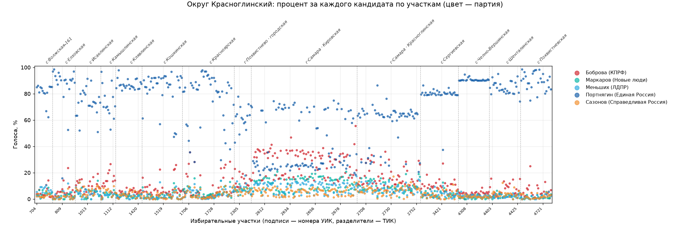
Округ №161 Красноглинский
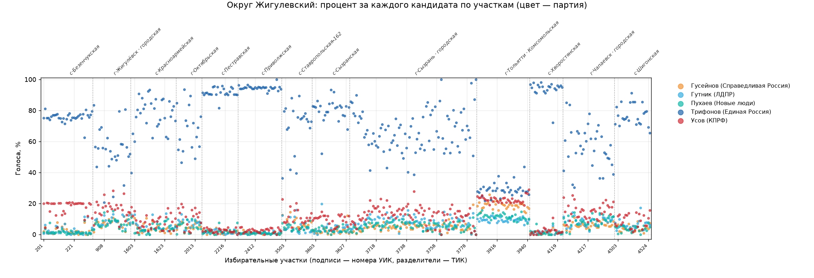
Округ №162 Жигулёвский
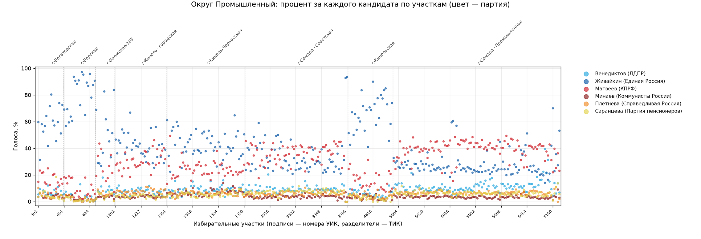
Округ №163 Промышленный
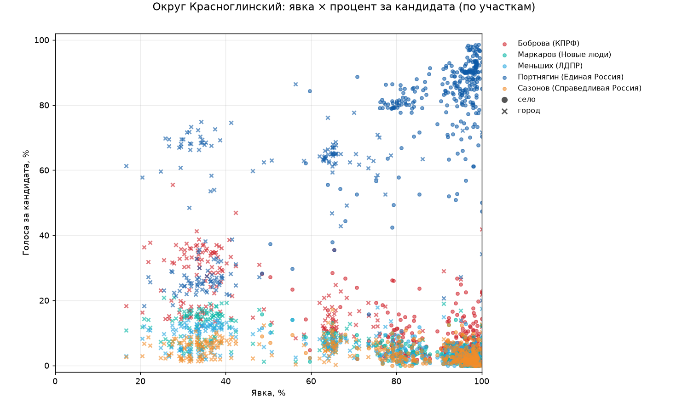
Округ №161: явка × % за кандидата
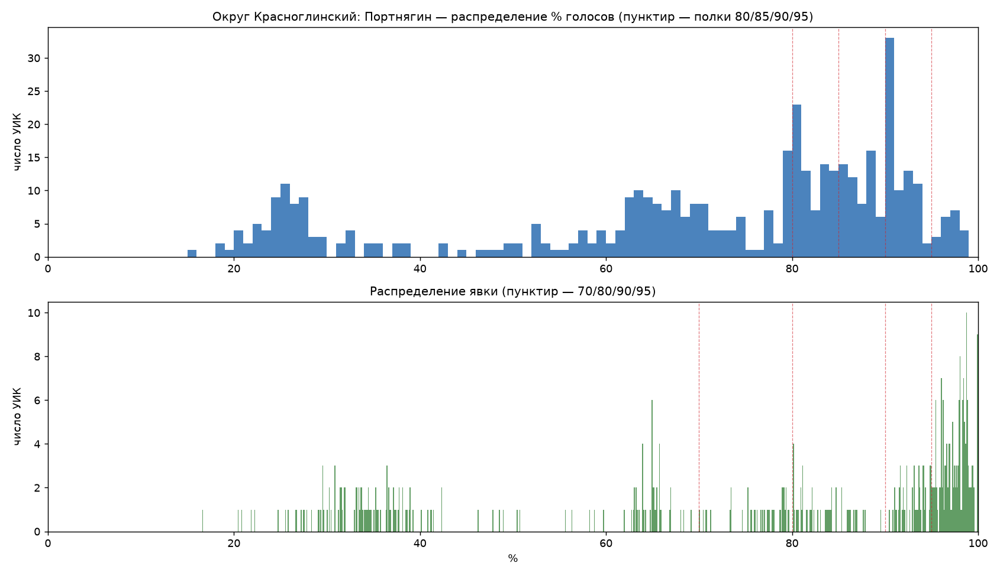
Округ №161: пик ровно на 90%
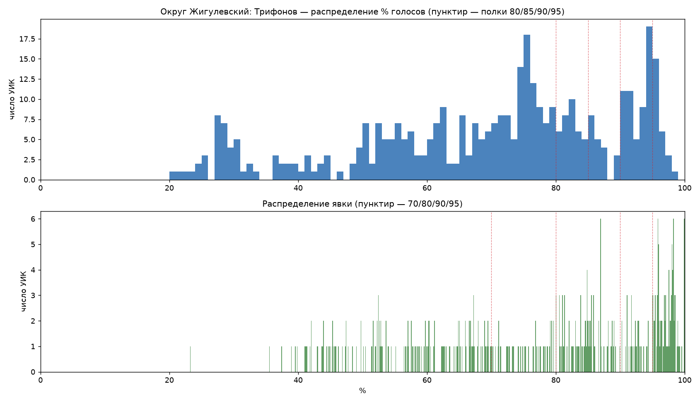
Округ №162: пик на 95%
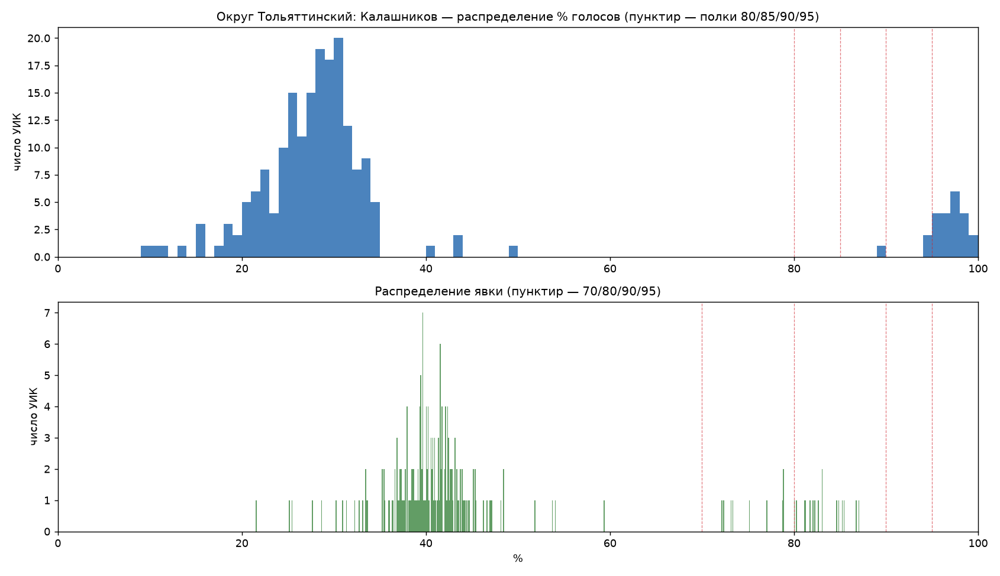
Округ №160: шип 95–99% (серия Ставропольская-160)
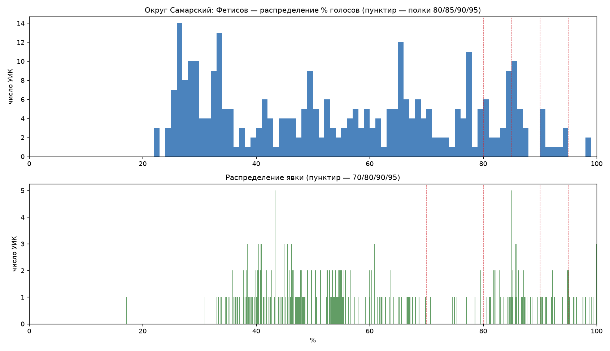
Округ №159: пик на 85%
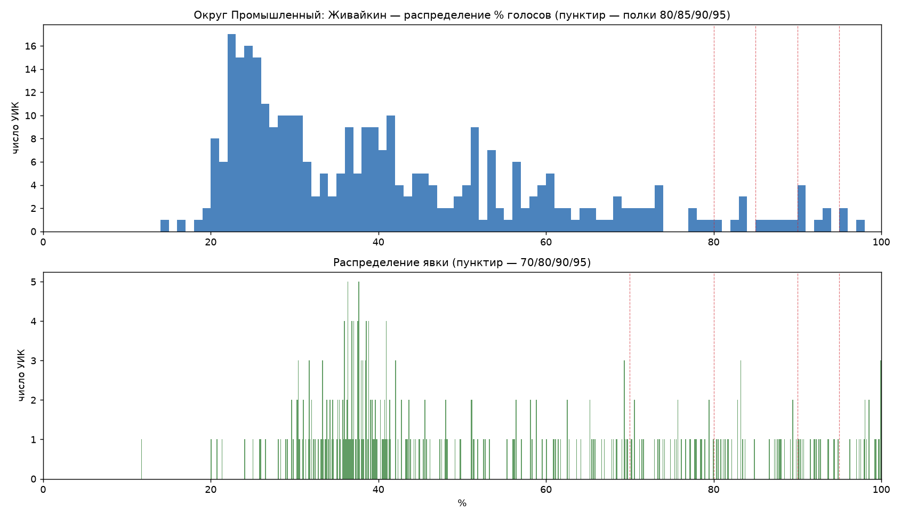
Округ №163: минимальные аномалии
| УИК | Округ | ТИК | Явившихся | % лидера | Кандидаты с ≤2 голосами |
|---|---|---|---|---|---|
| 127 | №159 Самарский | Алексеевская | 282 | 80,1 | Селиванов (СРЗП) — 0, Степанов (ЛДПР) — 0 |
| 414 | №159 Самарский | Большеглушицкая | 371 | 78,4 | Лескин (КПРФ) — 0, Томчук (Новые люди) — 0 |
| 413 | №159 Самарский | Большеглушицкая | 145 | 70,1 | Степанов (ЛДПР) — 2, Томчук (Новые люди) — 2 |
| 510 | №159 Самарский | Большечерниговская | 608 | 94,9 | Диянчук (Партия пенсионеров) — 2, Микулов (Коммунисты России) — 1, Селиванов (СРЗП) — 1, Степанов (ЛДПР) — 1, Томчук (Новые люди) — 1 |
| 505 | №159 Самарский | Большечерниговская | 500 | 94,6 | Диянчук (Партия пенсионеров) — 1, Микулов (Коммунисты России) — 2, Селиванов (СРЗП) — 2, Томчук (Новые люди) — 2 |
| 509 | №159 Самарский | Большечерниговская | 427 | 84,9 | Лескин (КПРФ) — 0, Степанов (ЛДПР) — 0 |
| 518 | №159 Самарский | Большечерниговская | 245 | 90,6 | Диянчук (Партия пенсионеров) — 2, Селиванов (СРЗП) — 1 |
| 517 | №159 Самарский | Большечерниговская | 198 | 91,9 | Диянчук (Партия пенсионеров) — 0, Микулов (Коммунисты России) — 0, Степанов (ЛДПР) — 0, Томчук (Новые люди) — 0 |
| 526 | №159 Самарский | Большечерниговская | 146 | 90,4 | Диянчук (Партия пенсионеров) — 0, Микулов (Коммунисты России) — 0, Томчук (Новые люди) — 0 |
| 512 | №159 Самарский | Большечерниговская | 125 | 86,4 | Микулов (Коммунисты России) — 0, Селиванов (СРЗП) — 0, Степанов (ЛДПР) — 0, Томчук (Новые люди) — 0 |
| 753 | №159 Самарский | Волжская-159 | 2138 | 98,2 | Лескин (КПРФ) — 2, Селиванов (СРЗП) — 2 |
| 711 | №159 Самарский | Волжская-159 | 601 | 85,5 | Микулов (Коммунисты России) — 0, Селиванов (СРЗП) — 1 |
| 1804 | №159 Самарский | Нефтегорская | 208 | 69,0 | Степанов (ЛДПР) — 2, Томчук (Новые люди) — 2 |
| 1823 | №159 Самарский | Нефтегорская | 127 | 72,6 | Микулов (Коммунисты России) — 0, Селиванов (СРЗП) — 2 |
| 1805 | №159 Самарский | Нефтегорская | 107 | 66,4 | Степанов (ЛДПР) — 2, Томчук (Новые люди) — 1 |
| 3026 | №159 Самарский | Самара, Октябрьская | 673 | 51,1 | Диянчук (Партия пенсионеров) — 2, Микулов (Коммунисты России) — 0 |
| 3537 | №160 Тольяттинский | Ставропольская-160 | 2378 | 99,0 | Барсук (Родина) — 2, Ершов (Коммунисты России) — 2, Перфилова (Зелёные) — 2 |
| 3522 | №160 Тольяттинский | Ставропольская-160 | 2174 | 99,0 | Барсук (Родина) — 2, Ершов (Коммунисты России) — 2, Маряхин (СРЗП) — 2, Мотрюков (Новые люди) — 2, Найденов (ЛДПР) — 2, Перфилова (Зелёные) — 2 |
| 3543 | №160 Тольяттинский | Ставропольская-160 | 2170 | 98,8 | Барсук (Родина) — 2, Перфилова (Зелёные) — 1, Сакеев (ЕР) — 2 |
| 3545 | №160 Тольяттинский | Ставропольская-160 | 2109 | 99,1 | Барсук (Родина) — 1, Ершов (Коммунисты России) — 1, Мотрюков (Новые люди) — 2, Найденов (ЛДПР) — 2, Перфилова (Зелёные) — 2 |
| 3523 | №160 Тольяттинский | Ставропольская-160 | 1950 | 99,0 | Барсук (Родина) — 2, Ершов (Коммунисты России) — 1, Найденов (ЛДПР) — 2 |
| 3525 | №160 Тольяттинский | Ставропольская-160 | 1887 | 99,0 | Ершов (Коммунисты России) — 2, Мотрюков (Новые люди) — 1, Найденов (ЛДПР) — 2, Перфилова (Зелёные) — 2, Сакеев (ЕР) — 1 |
| 3516 | №160 Тольяттинский | Ставропольская-160 | 1566 | 97,1 | Барсук (Родина) — 0, Ершов (Коммунисты России) — 0, Перфилова (Зелёные) — 0 |
| 3533 | №160 Тольяттинский | Ставропольская-160 | 1421 | 98,0 | Барсук (Родина) — 0, Найденов (ЛДПР) — 0, Перфилова (Зелёные) — 0 |
| 3527 | №160 Тольяттинский | Ставропольская-160 | 1303 | 96,2 | Найденов (ЛДПР) — 0, Перфилова (Зелёные) — 1, Сакеев (ЕР) — 0 |
| 3509 | №160 Тольяттинский | Ставропольская-160 | 1260 | 98,0 | Мотрюков (Новые люди) — 2, Найденов (ЛДПР) — 0 |
| 3528 | №160 Тольяттинский | Ставропольская-160 | 1259 | 96,3 | Ершов (Коммунисты России) — 2, Найденов (ЛДПР) — 1 |
| 3546 | №160 Тольяттинский | Ставропольская-160 | 1196 | 99,0 | Барсук (Родина) — 0, Ершов (Коммунисты России) — 0, Мотрюков (Новые люди) — 0, Найденов (ЛДПР) — 0, Перфилова (Зелёные) — 0 |
| 3529 | №160 Тольяттинский | Ставропольская-160 | 1184 | 97,9 | Мотрюков (Новые люди) — 1, Найденов (ЛДПР) — 2, Перфилова (Зелёные) — 2 |
| 3507 | №160 Тольяттинский | Ставропольская-160 | 1120 | 99,0 | Барсук (Родина) — 1, Ершов (Коммунисты России) — 1, Маряхин (СРЗП) — 1, Найденов (ЛДПР) — 1, Перфилова (Зелёные) — 1 |
| 3519 | №160 Тольяттинский | Ставропольская-160 | 1104 | 98,9 | Барсук (Родина) — 1, Ершов (Коммунисты России) — 1, Маряхин (СРЗП) — 2, Мотрюков (Новые люди) — 2, Найденов (ЛДПР) — 1, Перфилова (Зелёные) — 2 |
| 3520 | №160 Тольяттинский | Ставропольская-160 | 938 | 98,1 | Ершов (Коммунисты России) — 2, Маряхин (СРЗП) — 2, Мотрюков (Новые люди) — 2, Найденов (ЛДПР) — 2 |
| 3514 | №160 Тольяттинский | Ставропольская-160 | 895 | 98,0 | Барсук (Родина) — 0, Ершов (Коммунисты России) — 0, Маряхин (СРЗП) — 0, Мотрюков (Новые люди) — 2, Перфилова (Зелёные) — 1 |
| 3517 | №160 Тольяттинский | Ставропольская-160 | 494 | 98,0 | Барсук (Родина) — 0, Ершов (Коммунисты России) — 1, Мотрюков (Новые люди) — 1, Найденов (ЛДПР) — 1, Перфилова (Зелёные) — 0, Сакеев (ЕР) — 2 |
| 3518 | №160 Тольяттинский | Ставропольская-160 | 333 | 97,9 | Барсук (Родина) — 1, Ершов (Коммунисты России) — 1, Маряхин (СРЗП) — 1, Мотрюков (Новые люди) — 1, Найденов (ЛДПР) — 1, Перфилова (Зелёные) — 1, Сакеев (ЕР) — 1 |
| 3508 | №160 Тольяттинский | Ставропольская-160 | 318 | 94,3 | Маряхин (СРЗП) — 1, Мотрюков (Новые люди) — 1, Найденов (ЛДПР) — 2, Перфилова (Зелёные) — 1 |
| 3536 | №160 Тольяттинский | Ставропольская-160 | 282 | 97,9 | Барсук (Родина) — 0, Ершов (Коммунисты России) — 0, Маряхин (СРЗП) — 1, Мотрюков (Новые люди) — 0, Найденов (ЛДПР) — 0, Перфилова (Зелёные) — 0 |
| 803 | №161 Красноглинский | Елховская | 468 | 93,6 | Маркаров (Новые люди) — 0, Сазонов (СРЗП) — 1 |
| 802 | №161 Красноглинский | Елховская | 467 | 98,5 | Маркаров (Новые люди) — 2, Меньших (ЛДПР) — 2, Сазонов (СРЗП) — 0 |
| 817 | №161 Красноглинский | Елховская | 408 | 90,7 | Маркаров (Новые люди) — 0, Сазонов (СРЗП) — 0 |
| 806 | №161 Красноглинский | Елховская | 301 | 96,0 | Меньших (ЛДПР) — 0, Сазонов (СРЗП) — 0 |
| 820 | №161 Красноглинский | Елховская | 288 | 96,9 | Маркаров (Новые люди) — 2, Меньших (ЛДПР) — 2, Сазонов (СРЗП) — 2 |
| 808 | №161 Красноглинский | Елховская | 250 | 90,4 | Меньших (ЛДПР) — 2, Сазонов (СРЗП) — 2 |
| 807 | №161 Красноглинский | Елховская | 235 | 93,2 | Маркаров (Новые люди) — 1, Меньших (ЛДПР) — 2, Сазонов (СРЗП) — 0 |
| 819 | №161 Красноглинский | Елховская | 221 | 91,4 | Меньших (ЛДПР) — 0, Сазонов (СРЗП) — 0 |
| 801 | №161 Красноглинский | Елховская | 197 | 97,0 | Маркаров (Новые люди) — 0, Меньших (ЛДПР) — 1, Сазонов (СРЗП) — 1 |
| 818 | №161 Красноглинский | Елховская | 151 | 90,1 | Меньших (ЛДПР) — 1, Сазонов (СРЗП) — 2 |
| 1017 | №161 Красноглинский | Исаклинская | 234 | 90,2 | Маркаров (Новые люди) — 0, Меньших (ЛДПР) — 0 |
| 1013 | №161 Красноглинский | Исаклинская | 130 | 93,0 | Боброва (КПРФ) — 1, Маркаров (Новые люди) — 1 |
| 1012 | №161 Красноглинский | Исаклинская | 127 | 85,8 | Маркаров (Новые люди) — 0, Сазонов (СРЗП) — 2 |
| 1101 | №161 Красноглинский | Камышлинская | 187 | 96,8 | Маркаров (Новые люди) — 0, Меньших (ЛДПР) — 2, Сазонов (СРЗП) — 0 |
| 1102 | №161 Красноглинский | Камышлинская | 161 | 88,2 | Маркаров (Новые люди) — 1, Меньших (ЛДПР) — 0, Сазонов (СРЗП) — 2 |
| 1418 | №161 Красноглинский | Клявлинская | 203 | 93,0 | Маркаров (Новые люди) — 1, Меньших (ЛДПР) — 1, Сазонов (СРЗП) — 1 |
| 1419 | №161 Красноглинский | Клявлинская | 131 | 93,0 | Маркаров (Новые люди) — 2, Меньших (ЛДПР) — 1, Сазонов (СРЗП) — 1 |
| 1422 | №161 Красноглинский | Клявлинская | 117 | 88,9 | Маркаров (Новые люди) — 1, Меньших (ЛДПР) — 1 |
| 1507 | №161 Красноглинский | Кошкинская | 788 | 85,1 | Меньших (ЛДПР) — 0, Сазонов (СРЗП) — 0 |
| 1526 | №161 Красноглинский | Кошкинская | 445 | 96,6 | Меньших (ЛДПР) — 2, Сазонов (СРЗП) — 2 |
| 1511 | №161 Красноглинский | Кошкинская | 320 | 92,2 | Маркаров (Новые люди) — 1, Меньших (ЛДПР) — 1, Сазонов (СРЗП) — 1 |
| 1512 | №161 Красноглинский | Кошкинская | 306 | 92,2 | Маркаров (Новые люди) — 0, Меньших (ЛДПР) — 0, Сазонов (СРЗП) — 0 |
| 1535 | №161 Красноглинский | Кошкинская | 294 | 92,2 | Маркаров (Новые люди) — 1, Меньших (ЛДПР) — 2, Сазонов (СРЗП) — 1 |
| 1531 | №161 Красноглинский | Кошкинская | 246 | 93,1 | Маркаров (Новые люди) — 1, Сазонов (СРЗП) — 1 |
| 1510 | №161 Красноглинский | Кошкинская | 224 | 96,9 | Боброва (КПРФ) — 0, Меньших (ЛДПР) — 2, Сазонов (СРЗП) — 0 |
| 1519 | №161 Красноглинский | Кошкинская | 202 | 92,1 | Маркаров (Новые люди) — 2, Меньших (ЛДПР) — 2, Сазонов (СРЗП) — 1 |
| 1517 | №161 Красноглинский | Кошкинская | 193 | 92,2 | Маркаров (Новые люди) — 2, Меньших (ЛДПР) — 2, Сазонов (СРЗП) — 2 |
| 1534 | №161 Красноглинский | Кошкинская | 156 | 94,2 | Маркаров (Новые люди) — 0, Меньших (ЛДПР) — 0, Сазонов (СРЗП) — 0 |
| 1514 | №161 Красноглинский | Кошкинская | 142 | 88,0 | Маркаров (Новые люди) — 0, Меньших (ЛДПР) — 1 |
| 1520 | №161 Красноглинский | Кошкинская | 137 | 93,4 | Боброва (КПРФ) — 1, Сазонов (СРЗП) — 1 |
| 1532 | №161 Красноглинский | Кошкинская | 124 | 91,8 | Маркаров (Новые люди) — 0, Меньших (ЛДПР) — 0, Сазонов (СРЗП) — 0 |
| 1521 | №161 Красноглинский | Кошкинская | 120 | 93,3 | Маркаров (Новые люди) — 1, Меньших (ЛДПР) — 1, Сазонов (СРЗП) — 0 |
| 1728 | №161 Красноглинский | Красноярская | 176 | 93,6 | Маркаров (Новые люди) — 2, Меньших (ЛДПР) — 1 |
| 4703 | №161 Красноглинский | Похвистневская | 872 | 91,5 | Маркаров (Новые люди) — 1, Меньших (ЛДПР) — 1 |
| 4718 | №161 Красноглинский | Похвистневская | 648 | 98,3 | Маркаров (Новые люди) — 2, Сазонов (СРЗП) — 2 |
| 4714 | №161 Красноглинский | Похвистневская | 635 | 98,0 | Маркаров (Новые люди) — 1, Меньших (ЛДПР) — 0 |
| 4713 | №161 Красноглинский | Похвистневская | 406 | 97,3 | Меньших (ЛДПР) — 2, Сазонов (СРЗП) — 2 |
| 4704 | №161 Красноглинский | Похвистневская | 403 | 96,5 | Маркаров (Новые люди) — 0, Сазонов (СРЗП) — 2 |
| 4721 | №161 Красноглинский | Похвистневская | 167 | 95,2 | Боброва (КПРФ) — 2, Маркаров (Новые люди) — 1, Меньших (ЛДПР) — 2 |
| 4715 | №161 Красноглинский | Похвистневская | 151 | 98,0 | Боброва (КПРФ) — 1, Маркаров (Новые люди) — 1, Меньших (ЛДПР) — 0, Сазонов (СРЗП) — 1 |
| 4702 | №161 Красноглинский | Похвистневская | 148 | 100,0 | Боброва (КПРФ) — 0, Маркаров (Новые люди) — 0, Меньших (ЛДПР) — 0, Сазонов (СРЗП) — 0 |
| 4322 | №161 Красноглинский | Челно-Вершинская | 559 | 90,2 | Маркаров (Новые люди) — 1, Сазонов (СРЗП) — 1 |
| 4303 | №161 Красноглинский | Челно-Вершинская | 177 | 90,4 | Боброва (КПРФ) — 2, Сазонов (СРЗП) — 2 |
| 4312 | №161 Красноглинский | Челно-Вершинская | 177 | 90,4 | Маркаров (Новые люди) — 0, Сазонов (СРЗП) — 2 |
| 4328 | №161 Красноглинский | Челно-Вершинская | 146 | 90,4 | Меньших (ЛДПР) — 1, Сазонов (СРЗП) — 1 |
| 4313 | №161 Красноглинский | Челно-Вершинская | 102 | 90,2 | Маркаров (Новые люди) — 1, Сазонов (СРЗП) — 2 |
| 4421 | №161 Красноглинский | Шенталинская | 432 | 80,5 | Маркаров (Новые люди) — 0, Сазонов (СРЗП) — 0 |
| 4408 | №161 Красноглинский | Шенталинская | 281 | 95,0 | Маркаров (Новые люди) — 2, Меньших (ЛДПР) — 2 |
| 4412 | №161 Красноглинский | Шенталинская | 202 | 84,0 | Боброва (КПРФ) — 2, Маркаров (Новые люди) — 2 |
| 4403 | №161 Красноглинский | Шенталинская | 164 | 92,7 | Маркаров (Новые люди) — 0, Меньших (ЛДПР) — 2 |
| 4416 | №161 Красноглинский | Шенталинская | 113 | 82,3 | Маркаров (Новые люди) — 2, Меньших (ЛДПР) — 2 |
| 4405 | №161 Красноглинский | Шенталинская | 102 | 88,2 | Маркаров (Новые люди) — 1, Меньших (ЛДПР) — 1 |
| 232 | №162 Жигулевский | Безенчукская | 526 | 78,5 | Гусейнов (СРЗП) — 2, Пухаев (Новые люди) — 2 |
| 230 | №162 Жигулевский | Безенчукская | 495 | 77,0 | Гусейнов (СРЗП) — 0, Пухаев (Новые люди) — 0 |
| 220 | №162 Жигулевский | Безенчукская | 146 | 75,3 | Гусейнов (СРЗП) — 2, Пухаев (Новые люди) — 1 |
| 229 | №162 Жигулевский | Безенчукская | 143 | 80,4 | Гусейнов (СРЗП) — 0, Гутник (ЛДПР) — 1, Пухаев (Новые люди) — 2 |
| 216 | №162 Жигулевский | Безенчукская | 117 | 74,4 | Гутник (ЛДПР) — 2, Пухаев (Новые люди) — 0 |
| 1606 | №162 Жигулевский | Красноармейская | 235 | 90,6 | Гусейнов (СРЗП) — 2, Пухаев (Новые люди) — 0 |
| 1612 | №162 Жигулевский | Красноармейская | 130 | 92,3 | Гутник (ЛДПР) — 2, Пухаев (Новые люди) — 1 |
| 2224 | №162 Жигулевский | Пестравская | 361 | 90,0 | Гутник (ЛДПР) — 0, Усов (КПРФ) — 0 |
| 2209 | №162 Жигулевский | Пестравская | 246 | 95,5 | Гусейнов (СРЗП) — 0, Пухаев (Новые люди) — 0 |
| 2210 | №162 Жигулевский | Пестравская | 114 | 90,4 | Пухаев (Новые люди) — 0, Усов (КПРФ) — 2 |
| 2420 | №162 Жигулевский | Приволжская | 570 | 95,1 | Гусейнов (СРЗП) — 2, Пухаев (Новые люди) — 2 |
| 2422 | №162 Жигулевский | Приволжская | 457 | 95,2 | Гусейнов (СРЗП) — 1, Гутник (ЛДПР) — 0, Пухаев (Новые люди) — 1 |
| 2427 | №162 Жигулевский | Приволжская | 451 | 93,9 | Гутник (ЛДПР) — 2, Пухаев (Новые люди) — 1 |
| 2417 | №162 Жигулевский | Приволжская | 249 | 95,2 | Гусейнов (СРЗП) — 0, Гутник (ЛДПР) — 2 |
| 2424 | №162 Жигулевский | Приволжская | 205 | 94,1 | Пухаев (Новые люди) — 2, Усов (КПРФ) — 2 |
| 2405 | №162 Жигулевский | Приволжская | 136 | 94,9 | Гусейнов (СРЗП) — 2, Гутник (ЛДПР) — 2, Пухаев (Новые люди) — 1, Усов (КПРФ) — 2 |
| 2425 | №162 Жигулевский | Приволжская | 116 | 94,8 | Гусейнов (СРЗП) — 2, Гутник (ЛДПР) — 1, Пухаев (Новые люди) — 1, Усов (КПРФ) — 2 |
| 2407 | №162 Жигулевский | Приволжская | 115 | 96,5 | Гусейнов (СРЗП) — 1, Гутник (ЛДПР) — 0, Пухаев (Новые люди) — 0 |
| 2406 | №162 Жигулевский | Приволжская | 112 | 94,6 | Гусейнов (СРЗП) — 1, Гутник (ЛДПР) — 1, Пухаев (Новые люди) — 2, Усов (КПРФ) — 2 |
| 2401 | №162 Жигулевский | Приволжская | 106 | 96,2 | Гусейнов (СРЗП) — 1, Гутник (ЛДПР) — 1, Пухаев (Новые люди) — 1, Усов (КПРФ) — 1 |
| 2426 | №162 Жигулевский | Приволжская | 101 | 100,0 | Гусейнов (СРЗП) — 0, Гутник (ЛДПР) — 0, Пухаев (Новые люди) — 0, Усов (КПРФ) — 0 |
| 3605 | №162 Жигулевский | Сызранская | 210 | 87,0 | Гусейнов (СРЗП) — 1, Гутник (ЛДПР) — 0 |
| 3616 | №162 Жигулевский | Сызранская | 148 | 93,2 | Гусейнов (СРЗП) — 0, Пухаев (Новые люди) — 0 |
| 3781 | №162 Жигулевский | Сызранская городская | 396 | 97,7 | Гусейнов (СРЗП) — 1, Гутник (ЛДПР) — 1 |
| 4107 | №162 Жигулевский | Хворостянская | 426 | 96,0 | Гусейнов (СРЗП) — 1, Пухаев (Новые люди) — 1 |
| 4101 | №162 Жигулевский | Хворостянская | 425 | 96,7 | Гутник (ЛДПР) — 0, Усов (КПРФ) — 0 |
| 4114 | №162 Жигулевский | Хворостянская | 351 | 95,7 | Гутник (ЛДПР) — 0, Пухаев (Новые люди) — 0 |
| 4109 | №162 Жигулевский | Хворостянская | 283 | 95,4 | Гусейнов (СРЗП) — 1, Пухаев (Новые люди) — 1 |
| 4103 | №162 Жигулевский | Хворостянская | 230 | 97,8 | Гусейнов (СРЗП) — 0, Гутник (ЛДПР) — 1, Усов (КПРФ) — 0 |
| 4108 | №162 Жигулевский | Хворостянская | 209 | 98,1 | Гусейнов (СРЗП) — 1, Гутник (ЛДПР) — 2, Пухаев (Новые люди) — 0, Усов (КПРФ) — 1 |
| 4119 | №162 Жигулевский | Хворостянская | 180 | 96,1 | Гутник (ЛДПР) — 1, Пухаев (Новые люди) — 2, Усов (КПРФ) — 1 |
| 4105 | №162 Жигулевский | Хворостянская | 148 | 91,2 | Гутник (ЛДПР) — 0, Усов (КПРФ) — 0 |
| 4113 | №162 Жигулевский | Хворостянская | 136 | 95,6 | Гусейнов (СРЗП) — 0, Гутник (ЛДПР) — 2, Пухаев (Новые люди) — 0 |
| 4115 | №162 Жигулевский | Хворостянская | 102 | 97,1 | Гусейнов (СРЗП) — 0, Гутник (ЛДПР) — 0, Пухаев (Новые люди) — 0 |
| 617 | №163 Промышленный | Борская | 801 | 97,3 | Минаев (Коммунисты России) — 2, Плетнева (СРЗП) — 0, Саранцева (Партия пенсионеров) — 1 |
| 608 | №163 Промышленный | Борская | 586 | 94,2 | Плетнева (СРЗП) — 2, Саранцева (Партия пенсионеров) — 1 |
| 624 | №163 Промышленный | Борская | 555 | 95,9 | Венедиктов (ЛДПР) — 0, Минаев (Коммунисты России) — 0, Плетнева (СРЗП) — 0, Саранцева (Партия пенсионеров) — 0 |
| 630 | №163 Промышленный | Борская | 359 | 88,7 | Минаев (Коммунисты России) — 1, Саранцева (Партия пенсионеров) — 1 |
| 611 | №163 Промышленный | Борская | 279 | 90,7 | Венедиктов (ЛДПР) — 2, Плетнева (СРЗП) — 1, Саранцева (Партия пенсионеров) — 1 |
| 632 | №163 Промышленный | Борская | 268 | 90,7 | Венедиктов (ЛДПР) — 1, Плетнева (СРЗП) — 2 |
| 4609 | №163 Промышленный | Кинельская | 220 | 83,6 | Венедиктов (ЛДПР) — 2, Минаев (Коммунисты России) — 2 |
При явке в сотни человек и честном распределении значения 0–2 у кандидата парламентских партий практически невозможны (ожидание — десятки голосов). В большинство этих УИК лидер получил 70–99%.
Отчёт подготовлен автоматическим статистическим анализом. Вероятностные выводы не являются обвинительными. Данные предварительные — при публикации окончательных протоколов отчёт перегенерируется.